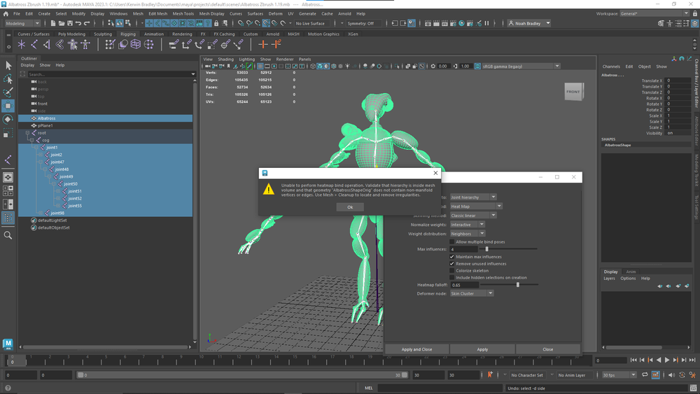
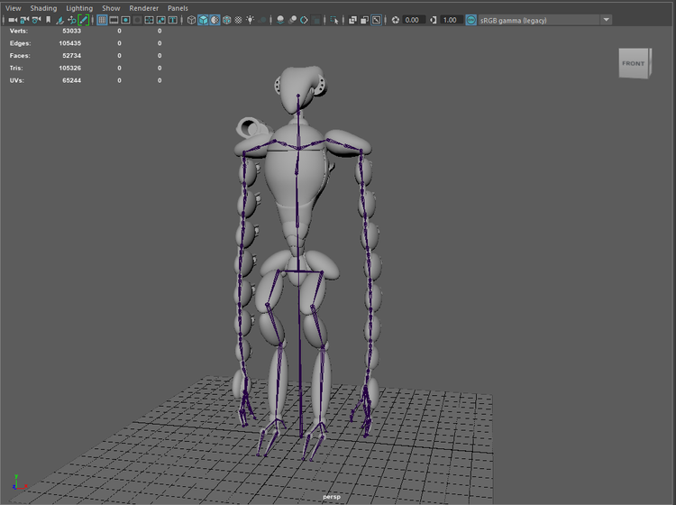
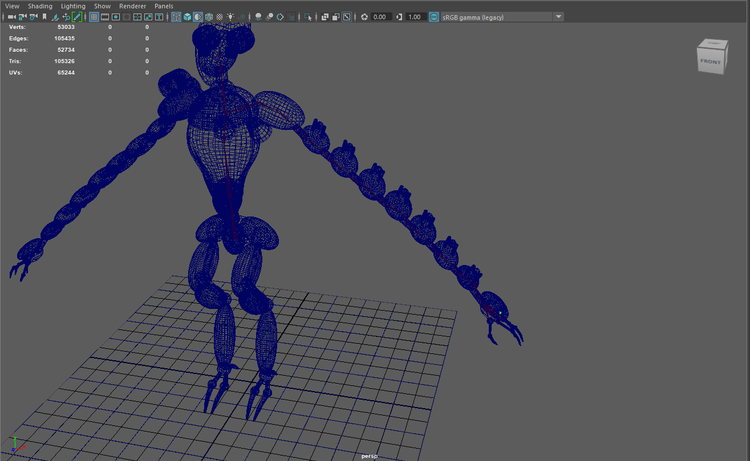

Star Free is a video game idea that I came up with during my time in Seattle that I have decided to revive and turn into a real game. It is a solo-dev passion project. In it you pilot a mech named Albatross. Together with Albatross the player will escape to the stars. The game is a 3d platformer and bullet hell, inspired by the movement in armored core and the gameplay of Ikaruga. The game is still in development, but a demo can be found on my itch page.
The game features Albatross, a mech piloted by the main character Tori. I modeled, rigged, and animated Albatross myself. I also did the concept art.




